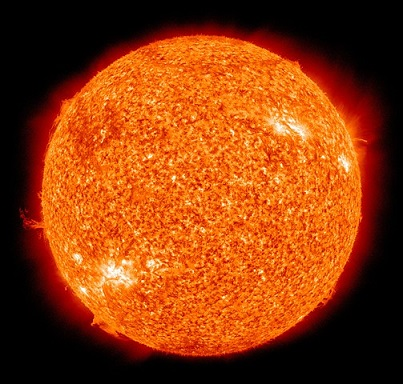

Солнце  Солнце — источник света, тепла и жизни в солнечной системе, но вместе с тем это ближайшая к нам звезда. Звезды мы видим как светящиеся точки даже в сильнейшие телескопы. Солнце — единственная звезда, у которой мы наблюдаем диск и различные явления на нем и можем их изучать. Изучение Солнца помогает нам лучше понять природу звезд, хотя многие из них сильно отличаются от Солнца. Масса Солнца больше массы Земли в 333 000 раз и в 750 раз больше массы всех планет, вместе взятых. По диаметру оно в 109 раз больше Земли. На Землю падает всего 1:2 000 000 000 доля излучаемой Солнцем энергии. Зная это и измерив энергию, падающую на 1 см2 земной поверхности за 1 мин, можно вычислить полную мощность излучения Солнца. Солнечной постоянной называется количество энергии Солнца, падающей за минуту на 1 см2 поверхности, перпендикулярной к солнечным лучам, при среднем расстоянии Земли от Солнца. Солнечная постоянная равна 2 кал/см2*мин = 0,14 вт/см2. Средняя плотность Солнца 1,4 г/см3, и тем не менее вследствие высокой температуры Солнце целиком газообразно. Наружные слои Солнца гораздо разреженнее земного воздуха, а плотность недр вследствие громадного давления очень велика. Ядро Солнца очень горячее (порядка 15 млн К) и давление в нем очень высокое (примерно в 300 млрд раз больше атмосферного давления на Земле) и атомы подходят так близко, что могут сливаться. В настоящее время примерно половина водорода в ядре уже выгорела в термоядерных реакциях. Солнце в целом на 92.1% состоит из водорода, 7.8% составляет гелий и 0.01% приходится на углерод, железо и другие элементы. Каждую секунду 700 млрд тонн водорода сгорает на Солнце. Несмотря на такую огромную скорость потерь, энергии Солнца хватит еще на 5 млрд лет такой жизни (примерно столько же лет Солнцу от рождения). Закончит свою жизнь Солнце белым карликом. Факты о Cолнце: Солнце состоит преимущественно из гелия и водорода, и не имеет твёрдой поверхности. Солнце вращается вокруг своей оси, причём слои звёздного вещества на экваторе вращаются почти на треть быстрее, чем слои в полярных областях. У Солнца, как и у любой звезды, есть своя атмосфера. Её верхняя граница уходит далеко за орбиту Плутона Свет доходит от Солнца до Земли за восемь минут. Температура солнечного ядра составляет примерно пятнадцать миллионов градусов. Температура на его поверхности составляет примерно пять с половиной тысяч градусов. Примерно установленный возраст Солнца составляет 4,6 миллиарда лет. Солнце проживёт ещё 4-5 миллиардов лет На Солнце воды куда больше, чем на Земле. Существующие в виде пара молекулы воды сконцентрированы в основном в «солнечных пятнах» и в узком слое под поверхностью звезды. Солнечное излучение смертельно опасно из-за сопутствующей ему радиации, но атмосфера Земли его блокирует. Солнце вращается вокруг центра Млечного Пути подобно тому, как Земля вращается вокруг Солнца. Период вращения Солнца вокруг центра нашей галактики составляет примерно 240 миллионов лет. Солнечный ветер распространяется от Солнца со скоростью около 450 километров в секунду. Энергия в солнечных недрах генерируется благодаря ядерному синтезу. Каждую секунду Солнце сжигает около семисот миллионов тонн своего вещества. Примерно через миллиард и сто миллионов лет яркость Солнца увеличится на десять процентов, что повлечёт за собой конец всякой жизни на Земле